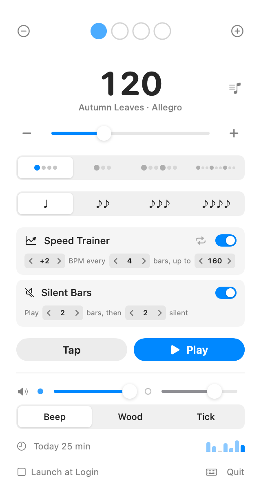

Pulstick
A minimal metronome that lives in your menu bar. One click away, always ready.
Requires macOS 15 (Sequoia) or later

Everything you need, nothing you don't
Menu Bar Resident
One click from the menu bar, no Dock icon. While it plays, the menu bar shows the BPM. Right-click Play to stop after 15 minutes or to add a one-bar count-in. Pulstick shows today's practice minutes with a small 7-day chart, and remembers your settings.
Speed Trainer & Silent Bars
Start slow and let Pulstick raise the tempo: +2 BPM every 4 bars up to 160, or your own steps, with a countdown to each step so the jump never catches you off guard. Silent Bars mutes the click every few bars so you can check you are still on the beat when it comes back.
Subdivisions & Sounds
Hear eighths, triplets or sixteenths between the beats with a softer click. Pick a beep, woodblock or mechanical tick sound, whichever cuts through your instrument, or mute it and follow the beat display.
Your Accents, Your Songs
Up to 16 beats per bar. Click a beat to accent it or make it a rest, so 7/8 groupings, clave patterns and a click on 2 and 4 all work. Save each song's tempo and pattern by name, switch through your setlist in one click, see how long you have practised each one and the fastest tempo you reached, or right-click a song to start it at 80 % of its tempo. Copy your setlist and paste it on your bandmates' Macs.
Tap Tempo
Tap along to a recording to find its tempo, even from another app with ⌃⌥T. Or click the BPM and type the number. Tempo markings like Andante are shown next to it.
Hands Stay on the Instrument
Start and stop from any app with ⌃⌥M. In the popover, Space, the arrow keys and 1–4 handle the rest. Controls are labelled for VoiceOver, and the speed trainer announces each new tempo. Native SwiftUI, no Electron.
Keyboard shortcuts
Anywhere
- ⌃⌥M
- Play / Stop
- ⌃⌥T
- Tap tempo
- ⌃⌥, .
- Previous / next song
In the popover
- Space
- Play / Stop
- ↑↓
- Tempo ±1 (with ⇧: ±5)
- T
- Tap tempo
- M
- Mute / unmute
- S
- Speed trainer on / off
- R
- Back to the start tempo
- 1–4
- Choose a preset
- []
- Previous / next song
Get started in seconds
Download
Grab the latest release from GitHub Releases.
Install
Move Pulstick.app to your Applications folder. The first time, right-click it and choose Open.
Launch
Open Pulstick. The metronome icon appears in your menu bar. Done.